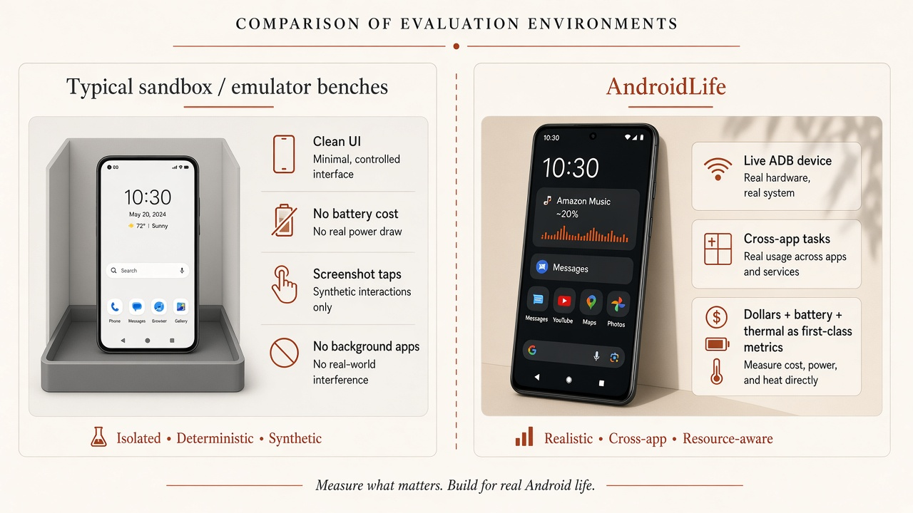
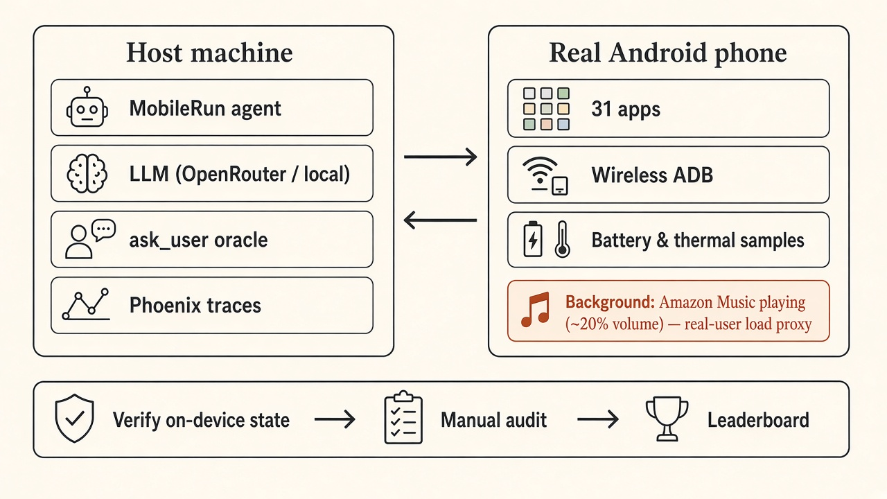
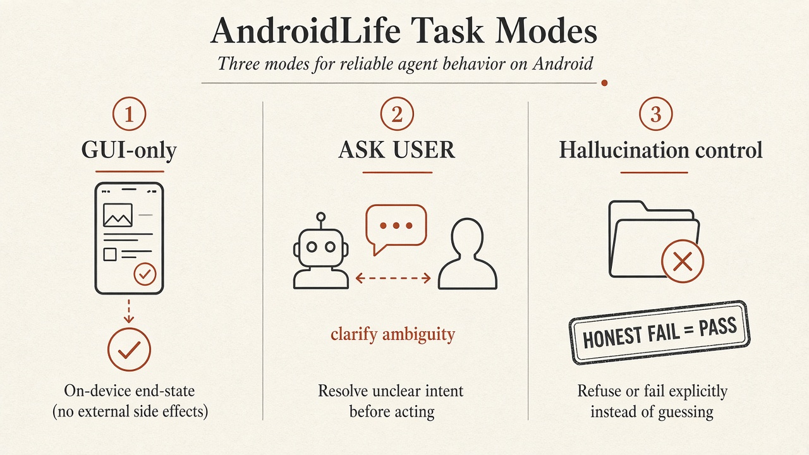
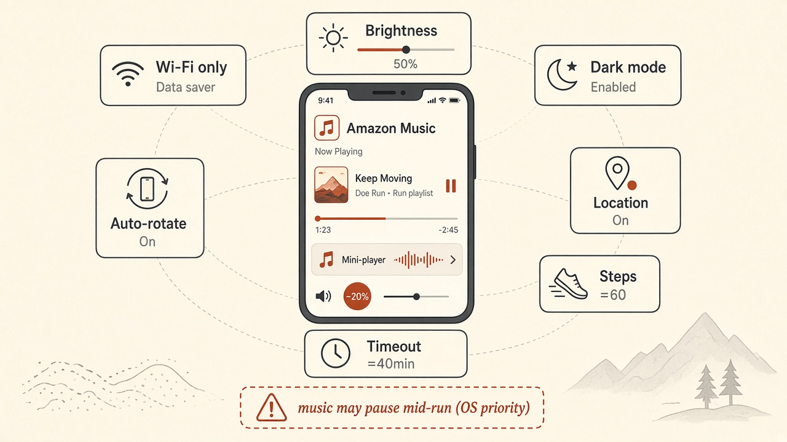

AndroidLife
Can an AI agent survive a day in the life of a real user?
Not a sterile one-button sandbox. Agents face everyday phone work on a real Android device —
then we ask what finishing the job actually costs: dollars, battery, heat, and time.
31 apps · 530 tasks*
· 168 cross-app · 28-day schedule ·
60-task public leaderboard.
Success is verified against device state — not the agent’s self-report.
- Easy / Medium / Hard · single-app and cross-app
- On-device end-state grading · hallucination controls
- ASK USER when the prompt is ambiguous
- Steps, latency, $ cost, battery, and thermals — first-class metrics
- Trajectories + screen-replay GIFs under the Tasks tab
Overview
AndroidLife is a real-phone agent benchmark: everyday tasks on a live OnePlus CPH2423, graded by on-device end-state — and by what finishing the job costs (dollars, battery, heat, steps). Inspired by the visual brevity of MobileWorld, the story below is figure-first; deep prose lives in How it was formed.

Two tiers, same harness (MobileRun / Droidrun over wireless ADB):
- 60-task public leaderboard — fully run on-device (3×20 days), manual-audit ground truth. Browse trajectories.
- 530-task dataset* — 28-day schedule · 31 apps · 168 cross-app · ASK USER + hallucination controls. How it was formed.


Metrics
Kept simple — only what matters on a phone:
- Success: on-device end-state, not the agent’s claim.
- Success Rate (SR): overall / easy·medium·hard / interaction vs GUI-only (ASK USER gate).
- UIQ / KBIQ: user / KB interaction quality.
- Phone cost: $ · battery % · thermal · steps · latency (per-second samples).
Evaluation Workflow
Hard ASK USER tasks
call ask_user against a simulated user (default gpt-5.4-mini via
--ask-user-model). After the run, grading forks by task type:
output.json · trajectory · self-reporthallucination_controls.json
Typical Run Layout
Each public run lands under assets/runs/public/<TS>/ with day1/–day3/
and one folder per task. Artifacts below are what evaluation reads.
Example media from the best published row
(qwen3.8-27b TEXT, 61.7%, run
2026-08-28-002424):
assets/runs/public/<TS>/ ├── day1/ … day3/ │ └── <bucket>-<apps>-<nnn>/ │ ├── output.json success / reason / steps │ ├── output.txt final agent message │ ├── meta.json exit code, labels, proxy ports │ ├── run_metrics.json battery / thermal / tokens / elapsed │ ├── samples.ndjson per-second phone samples │ ├── agent.log.txt full tool + LLM log (HC judge input) │ ├── llm_proxy_metrics.jsonl per-call cost / tokens │ ├── ask_user_metrics.jsonl simulated-user turns (UIQ / KBIQ) │ ├── kb_audit.json optional manual KBIQ sidecar │ └── trajectories/<id>/ │ ├── trajectory.json thoughts + tool calls │ ├── macro.json actions + a11y (text mode) │ ├── screenshots/ per-step PNGs (vision primary) │ └── ui_states/ per-step UI dumps └── (batch log / Phoenix DB live beside the run root)
screenshots/ and ui_states/ open the best-model example task
(easy-calculator-006 from qwen3.8-27b TEXT). Clicking an artifact name in the tree
highlights it (orange tint = :target).Execution Workflow
Same MobileRun loop for both tiers. Resolve the task prompt (and placeholders), then run on-device through telemetry, trajectory capture, and graded audit.
AndroidLife_public_v2.json
/
public.md;
pin from
public_vars.local.env
(copy
public_vars.example.env);
530 uses
tasks_vars
AndroidDriver / MobileAgent); a11y tree ± visionsamples.ndjson); ask_user when neededandroidlife_report.py
→
SR / steps /
UIQ /
KBIQ;
HC via
eval_hallucination_controls.py
+
manual audit
(Fig. 3)
Fig. 5. Execution workflow from task prompt through on-device MobileRun to aggregate metrics and manual audit.
See Evaluation (Fig. 3) for ASK USER / hallucination-control details and Metrics for score definitions.
Key Features
Figure-first summary — same story as Figs 1–3 above. Deep lists and app inventory live in How it was formed.
- Coverage 28-day fixed schedule · 31 apps · 168 cross-app · 303 placeholders
- On-device cost Per-second battery · thermal · $ · steps/latency — with Amazon Music† as concurrent-load proxy
- Verified success End-state grading on device; hallucination controls reward honest fail, punish fake complete
- Metrics SR · UIQ/KBIQ · steps — MobileWorld-style aggregation (no MCP metric)
Technical Details
The harness is uv-managed end to end: the dataset lives in
benchmarks/androidlife-600/, the runner in androidlife_runner.py /
androidlife_tasks.py, and run artifacts under assets/runs/ (with
per-run Phoenix DBs in assets/db/public/<RUN_TS>/). Site data is generated by
website/tools/build_site_data.mjs.
Full reset/seed contract:
docs/device-reset-and-seed.md.
Reference device
- Phone: OnePlus CPH2423 (OnePlus 10R 5G), Android 15, non-rooted.
- ADB: Tailscale wireless preferred for measured runs —
serial
100.108.15.119:5555(USB serialRS7XKZDI8HTOJNYLto re-armadb tcpip 5555when needed). - Model host: any OpenAI-compatible endpoint — OpenRouter, Requesty, or a local server.
- Optional: host-side
scrcpy --record(off by default to save disk).
Controlled run environment
Every public 60-task leaderboard run uses the same fixed phone state so battery, thermal, and success stay comparable across models. This is a day-in-the-life proxy — not a quiet idle handset:

Amazon Music plays in the background†
(volume ~20%) for public 60-task runs. That is intentional: a real user’s phone is rarely
idle — media is often running while they switch apps. Keeping Amazon Music
(com.amazon.mp3, whitelisted against OxygenOS virtual-freeze) is our
proxy for concurrent real-user load while the agent works, so measured
battery / thermal cost includes that background activity.
Caveat†: playback did not stay continuous for the full run — Android / OxygenOS priority scheduling can still pause or kill Amazon Music mid-batch even after whitelist. Treat battery/thermal as “with music intended,” not guaranteed continuous audio for every minute of the 60 tasks.
Whitelist once per device:
adb shell dumpsys deviceidle whitelist +com.amazon.mp3
and
adb shell cmd appops set com.amazon.mp3 RUN_ANY_IN_BACKGROUND allow
(+ Settings → Don’t optimize / allow background activity). Without this, OxygenOS
SIGSTOPs background apps and playback dies mid-run.
- Screen brightness fixed at 50%.
- Wi-Fi only (mobile data off).
- Auto-rotate on · Location on · Dark mode on.
- Public caps (per
evaluation policy
/ AndroidDaily):
--steps 60,--task-timeout 2400(40 min).
Reset → seed → verify (before every public run)
S=100.108.15.119:5555
adb connect "$S" && adb -s "$S" shell echo OK
# undo agent side-effects, restore baseline seeds
uv run python scripts/seeding/reset_phone.py --serial "$S" --profile public_v2 --apply
# push Day 1–3 fabricated data + public Obsidian notes + PDFs
uv run python scripts/seeding/seed_data.py --serial "$S" --day 1
uv run python scripts/seeding/seed_data.py --serial "$S" --day 2
uv run python scripts/seeding/seed_data.py --serial "$S" --day 3
uv run python scripts/seeding/enrich_public_notes.py --serial "$S"
uv run python scripts/seeding/fabricate_public_pdfs.py --serial "$S"
# re-seed tomorrow afternoon conflicts (easy__calendar__002) — see device-reset-and-seed.md
# fail-fast gate (do not launch on FAIL)
uv run python scripts/seeding/reset_phone.py --serial "$S" --profile public_v2 --verify-only
for d in 1 2 3; do
uv run python scripts/seeding/verify_day1_seeds.py --serial "$S" --day "$d"
donePublic 60-task batch
RUN_TS=$(date +%Y%m%d-%H%M%S)
# Phoenix first (per-run DB under assets/db/public/$RUN_TS/), then:
nohup uv run androidlife_tasks.py \
--dataset benchmarks/androidlife-600/AndroidLife_public_v2.json \
--source public.md --all --serial 100.108.15.119:5555 \
--llm-upstream-base https://openrouter.ai/api --model <model> \
--ask-user-model gpt-5.4-mini --temperature 0.0 \
--steps 60 --task-timeout 2400 \
--save-trajectory action \
--vars-file benchmarks/androidlife-600/public_vars.local.env \
--ask-user-kb benchmarks/androidlife-600/multiturn_kb_public.json \
--phoenix-url http://localhost:6006 --phoenix-project androidlife-public \
--run-root "assets/runs/public/$RUN_TS" \
< /dev/null > "assets/runs/public/batch-$RUN_TS.log" 2>&1 &
# optional: add --vision for screenshot-driven runs
# resume: same --run-root + --resume-from <task_id>Tracing (Phoenix)
Every LLM call, tool execution, and agent step is captured as OpenTelemetry spans by
Arize Phoenix
(uv run phoenix serve --port 6006), with a full trace tree per task at
localhost:6006.
Browse public trajectories
Per-task screen replays and traces live under the Tasks tab (public 60 + full 530), not on this homepage.
Benchmark Summary
The public benchmark is a 60-task, 3-day preview drawn from the 530-task corpus
(every task keeps its real 530 task_id, exact prompt text, and placeholder slots) so
the pipeline, seeds, and grading can be exercised on a small, self-contained sample. Its bucket,
app, and difficulty distributions intentionally track the parent corpus. See
How it was formed for the full story, and
Tasks for the 530-task corpus.
Daily Schedule
The fixed 28-day schedule: tasks per day, easy/medium/hard split, ASK USER (Single/Multi-turn) + Hallucination Controls-based hard tasks, and distinct apps per day.
| Day | Tasks | Easy / Med / Hard | ASK / DET | Distinct apps |
|---|
Documentation
Core entrypoints and artifacts for working with the benchmark:
- Task Metadata - generated app, day, and example index consumed by the published website
- Reproducibility - reset, seed, verify protocol - and why live-phone runs are never bitwise-identical
- Tasks - public 60 trajectories + full 530-task corpus browser
- Technical Details - device, controlled env (Amazon Music bg), reset/seed/verify, and public batch commands
- Device reset & seed - canonical pre-run runbook on the OnePlus CPH2423
Publishing Notes
The website is static and GitHub Pages-ready. Its data file is generated from the real benchmark dataset, so publishing the site also publishes the benchmark structure.
Contributions are expected to happen through the repository itself: new tasks, better seeds, and stronger evaluation baselines can all build on the same layout.
Citation
If you use AndroidLife in your work, please cite it as:
@misc{singh2026androidlife,
title={AndroidLife: Real-Phone Android Agent Benchmark for Open-Weight Models and On-Device SLMs},
author={Yuvraj Singh},
year={2026},
howpublished={\url{https://github.com/YuvrajSingh-mist/AndroidLife}},
}Footnotes
- 530-task dataset* - only 5 of 28 schedule days have been fully run on-device so far (days 1-5; reports in
reports/day-*.md). The remaining days are rolling out on the same harness; task definitions for all 530 already ship in the dataset. The 60-task public benchmark above is the fully-run, published evaluation set (see reproducibility). ↩ - Early results. Each row is a public-dataset run (60 tasks - 20 tasks × 3 days) on a OnePlus CPH2423 (Android 15, non-rooted); the kimi-k2.6 VISION row is flagged interrupted - its run died at 35/60 when the phone battery hit 0, so its numbers cover only the 35 finished tasks. Success rate is the manual-audit ground truth from each run's report in
reports/public/- every task's verdict was hand-verified on-device per the manual-audit protocol (false passes downgraded to FAIL, honest-fail hallucination controls counted as success). See How the metrics are computed for each metric's definition. More rows will appear as more models are benchmarked. ↩ - Why vision mode trails. mobilerun is pixel-grounding only - it draws a labeled coordinate grid on the screenshot (10 divisions,
x=N / y=N) but there is no OCR element-grouping, no element IDs, and no marked touch boxes. The model inspects the raw screenshot and eyeballs where to tap from pixels + grid, with no per-element anchors to lean on (that marked-boxes approach is UI-TARS / mobile-vlm / Mobile-Agent-v2, not mobilerun). So a vision run has to reconstruct every target from pixels alone - which is why vision consistently lands below the text runs below. ↩ - Amazon Music† — intended as continuous background load (~20% volume) for the full public 60-task run, but playback did not run uninterrupted: the OS shut it off mid-run due to system priority scheduling (despite deviceidle whitelist /
RUN_ANY_IN_BACKGROUND/ battery “Don’t optimize”). Battery and thermal numbers still include periods with music on; do not assume continuous audio for every task. ↩